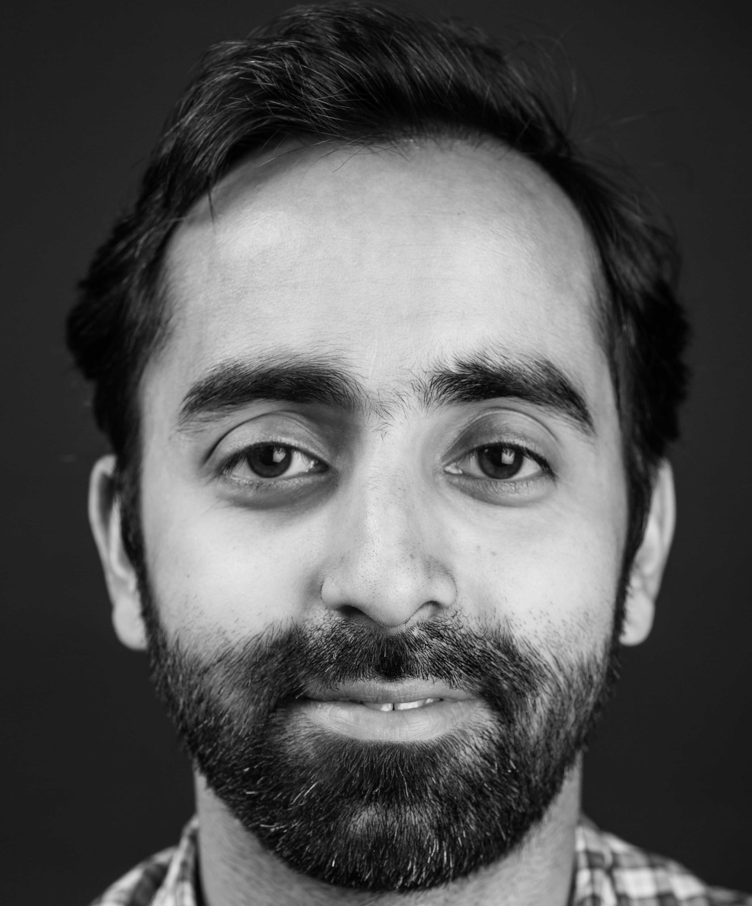

Collaborators
Mandar Chandorkar
Mandar is a PhD student in the Multiscale Dynamics group. His research domain is applied Mathematics in the areas of Machine Learning, Large Scale Inference, Physical Systems and Computer Science. He is currently pursuing his PhD in the topic "Machine Learning for Space Weather predictions".
Carl Shneider

Carl is a postdoctoral researcher in the Multiscale Dynamics group. His research is on the topic of Space Weather Forecasting using Machine Learning. In particular, he makes use of heterogeneous data from the Solar and Heliospheric Observatory (SOHO) and Solar Dynamics Observatory (SDO) spacecrafts and looks forward to using data from the Parker Solar Probe and Solar Orbiter missions. He is also interested in Exoplanet Space Weather and its impact on Habitability. He has experience in the fields of Astrophysics, Bioinformatics, and Theoretical Physics.
Rakesh Sharma
Rakesh is a post-doctoral researcher at the Multiscale Dynamics group at CWI Amsterdam. His research interests are in Uncertainty Quantification, Bayesian Parameter Estimation and Machine Learning applied to Space Weather and Computational Fluid Dynamics problems. He also has experience in numerical modelling with reduced order models for wind turbines.
Andong Hu
Andong is a post-doctoral researcher at the Multiscale Dynamics group at CWI Amsterdam, funded by the AIDA project. His research interests are in Remote Sensing, Geodesy and Surveying, and ionospheric modelling using GNSS.
External collaborators
Michele Sebag
With a background in maths (Ecole Normale Supérieure), Michèle Sebag went to industry (Thalès) where she started to learn about computer science, project management, and artificial intelligence. She got interested in AI, became consulting engineer, and realized that machine learning was something to be. She was offered the opportunity to start research on machine learning for applications in numerical engineering at Laboratoire de Mécanique des Solides at Ecole Polytechnique After her PhD at the crossroad of machine learning (LRI, Université Paris-Sud Orsay), data analysis (Ceremade, Université Paris-10 Dauphine) and numerical engineering (LMS, Ecole Polytechnique), she entered CNRS as research fellow (CR1) in 1991. In 2001, she took the lead of the Inference and ML group, now ML & Optimization, at LRI, Université Paris-Sud. In 2003 she founded together with Marc Schoenauer the TAO (ML & Optimization) INRIA project.
Her research interests include reinforcement learning, preference learning, information theory and surrogate optimization. Home Page
Cyril Furtlehner
Cyril Furtlehner is a permanent research member of the Inria Saclay project-team TAO. Originally trained in theoretical physics, holding a Phd of Paris VI University dealing with quantum disordered systems, he eventually joined first the Inria team PREVAL in Rocquencourt to work on stochastic processes and more applied research themes like the self organization of a fleet of automated vehicles. After being hired in the TAO team, his scientific interests shifted to interdisciplinary subjects concerning statistical physics problems related to machine learning, optimization and traffic inference, as well as stochastic particle processes related to microscopic traffic modeling. Recent activities are focusing on inverse Markov random field problems for large scale inference algorithms developments.
Yuri Sphrits (GFZ/UCLA)
Dr Shprits' primarily area of scientific research is understanding the dynamics of the radiation belts and their effect on satellites. Dr Shprits has developed codes to quantify the dynamical evolution of the radiation belts. He has also developed codes to quantify quasi-linear scattering rates due to wave-particle interactions. He has quantified the effects of scattering by ELF/ VLF and ULF waves and identified a number of critical effects associated with radial diffusion, local acceleration and loss of the radiation belt electrons.
Simon Wing (Johns Hopkins University)

Simon Wing is associated with The Johns Hopkins University Applied Physics Laboratory and University of Maryland. His research interests include modeling the open field line particle precipitation; modeling the magnetotail pressure, density, and temperature; geosynchronous environment; solar wind-magnetosphere interaction; field-aligned currents; and space weather. US NOAA Space Wether Prediction Center (SWPC) routinely broadcasts Kp forecasts from his Kp models.
Joe Borovsky (Space Science Institute)
Joe Borovsky is a Senior Research Scientist at the Space Science Institute, where he is chair of the Center for Space Plasma Physics. He has experience in theoretical, computational, and experimental physics. Current research interests focus on structure in the solar wind, the systems science of the Earth’s magnetosphere, and solar-wind/magnetosphere coupling.
Algo Carè (U. Brescia, Italy)
Algo Carè is a Research Fellow (RTDA) at the Department of Information Engineering, University of Brescia, Italy. His main research interests are in data-driven optimisation methods (namely, the "Scenario Approach"), finite-sample System Identification and Machine Learning.